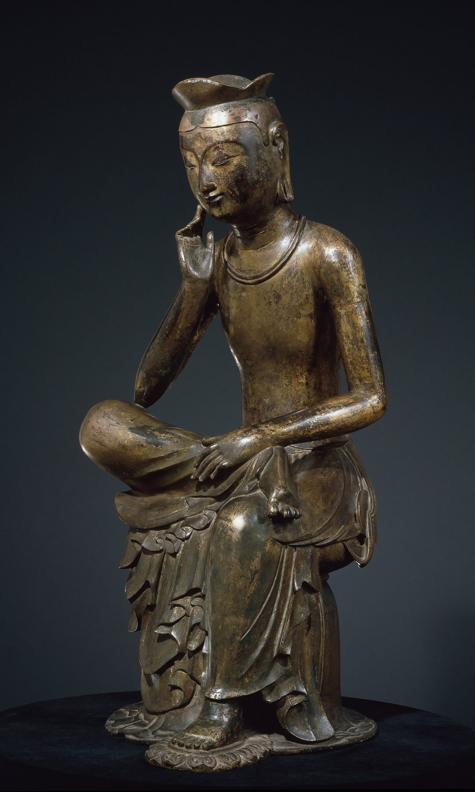

Ebrey, p. 70
“In a rough and tumultuous age, Buddhism offered an appealing emphasis on kindness, charity, the preservation of life, and the prospect of salvation.”
Ebrey & Walthall, Pre-Modern East Asia, p. 70.

Describe the pose: weight, hand, eyes. What is smooth, and what is elaborate?
Han falls 220 · Luoyang taken 311 · Fotudeng arrives 310
“In a rough and tumultuous age, Buddhism offered an appealing emphasis on kindness, charity, the preservation of life, and the prospect of salvation.”
Ebrey & Walthall, Pre-Modern East Asia, p. 70.
There were no forced conversions. Who gained by taking up Buddhism, and who had something to lose?
“But now the monks shave their heads. How this violates the sayings of the sages and is out of keeping with the way of the filial!”
SCT p. 423. Oct 13 reader · p. 2
“Taibo cut his hair short and tattooed his body ... And yet Confucius praised him, saying that his might well be called the ultimate virtue.”
SCT p. 423. Oct 13 reader · p. 2
“Now of felicities there is none greater than the continuation of one’s line, of unfilial conduct there is none worse than childlessness.”
SCT pp. 423–424. Oct 13 reader · p. 2
“Boyi and Shuqi starved in Shouyang, but Confucius praised their worth. ... One does not hear of their being ill-spoken of because they were childless and propertyless.”
SCT p. 424. Oct 13 reader · p. 3
“The spirit never perishes. Only the body decays.”
SCT p. 424 · compare the editors on p. 416: no eternal Self or soul. Oct 13 reader · p. 3
Mouzi answers each charge with someone Confucius praised. Whose books is he arguing from? What does he give up to win?
“Therefore they who rejoice in the way of Śākya invariably first serve their parents and respect their lords.”
SCT p. 427. Oct 13 reader · p. 3
“Kings and princes, though they have the power of preserving existence, cannot cause a preserved creature to be without woe. ... This is why the monk refuses homage to the Lord of the Myriad Chariots”
SCT pp. 428–429. Oct 13 reader · p. 4
Who is outside the emperor’s authority, and why? The king can ___, but cannot ___.
“In recent years the crops have been scarce, and the people are restless. Besides, because of frequent border raids from the neighboring state, our soldiers are still engaged in battle.”
SKT pp. 41–42. Oct 13 reader · p. 5
“Sacrificing his life in order to accomplish goodness is the great principle of the official.”
SKT p. 42. Oct 13 reader · p. 5
“To destroy others in order to preserve oneself is not the way of a monk. But since I, a poor monk, live in Your Majesty’s territory and waste Your Majesty’s clothes and food, I dare not disobey.”
SKT p. 45. Oct 13 reader · p. 5
“serve your sovereign with loyalty; attend your parents with filial piety; treat your friends with sincerity; do not retreat from a battlefield; be discriminating about the taking of life.”
SKT pp. 45–46. Oct 13 reader · p. 6
Huiyuan’s monk stands outside the king’s reach. Where does Wŏn’gwang stand? Whom is Buddhism serving here?
“in China the governments successfully claimed the authority to regulate Buddhist clergy and monastic establishments.”
Ebrey & Walthall, Pre-Modern East Asia, p. 72.
China or Silla: where did the monk stand against the ruler? Buddhism flourished because ___, on the ruler’s terms because ___.